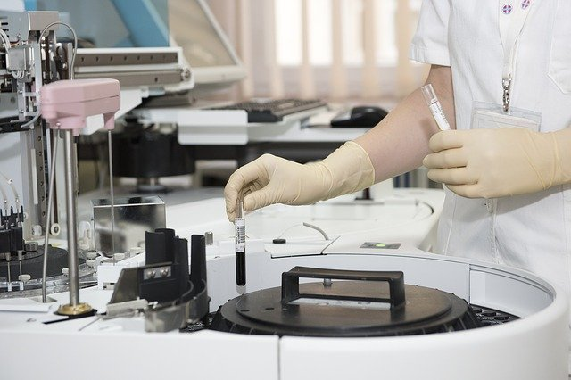
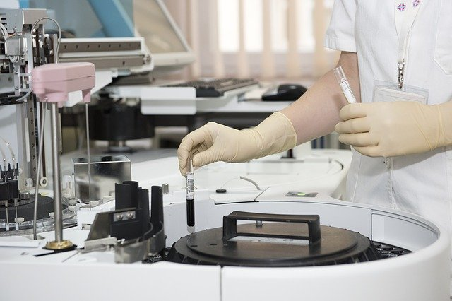

Equipo de Primera
Contamos con el mejor equipo médico para atendar a nuestros pacientes y que nuestro personal médico cuente con las herramientas necesarias.
CONOCER MÁS
Examenes Médicos
Contamos con los mejores laboratorios para la realización de examenes médicos con tiempo de entregas de resultados rapidos.
CONOCER MÁSOfrecemos la mejor atención a nuestros pacientes
Nuestros pacientes son la prioridad en todo momento desde que ingresan a nuestras instalaciones el personal médicos se esfuerza para garantizar la mejor atención que se requiere.
Especialidades
Cardiología
La Cardiología es la parte de la Medicina que se ocupa del aparato circulatorio. Su finalidad básica es el estudio, diagnóstico, tratamiento y prevención de las enfermedades cardiovasculares. La Cardiología es la parte de la Medicina que se ocupa del aparato circulatorio.
Oftalmología
Especialidad médica que estudia las patologías del globo ocular, la musculatura ocular, sistema lagrimal y párpados y sus tratamientos. En la práctica médica de esta especialidad el campo que abarca es muy amplio ya que existen múltiples enfermedades primarias de nuestros ojos
Laboratorios Médicos
El laboratorio médico es el lugar donde los técnicos y profesionales en análisis clínicos, analizan muestras biológicas humanas. Es una especialidad médica básica, perteneciente al grupo de las que se denominan comúnmente medios de diagnóstico y como todas ellas resulta indispensable en la actualidad.
Cirugía
Es una especialidad médica que utiliza técnicas manuales e instrumentales operativas en un paciente, con el objetivo de investigar o tratar enfermedades o lesiones.
Odontología
Parte de la estomatología que se ocupa de la dentadura y sus enfermedades. Incluye el diagnóstico, tratamiento y prevención de las enfermedades del aparato estomatognático,
Urología
Especialidad médico-quirúrgica que se ocupa del diagnóstico y tratamiento de las enfermedades morfológicas renales y de las del aparato urinario y retroperitoneo que afectan a ambos sexos.
Departamentos
Nuestra amplia capacidad para atender cualquier tipo de urgencia médica.

Oftalmología
Clínica Vidas
Sobre Nosotros
Presione las barras para desplegar la informacion importante relacionada a nosotros
Nuestra Misión
Colaborar para mejorar la salud y la calidad de los pacientes ofreciendo servicios sanitarios excelentes, asi mismo siempre teniendo como prioridad el estado de salud de nuestros pacientes. Aportar nuestra experiencia médica con nuestro personal médico que dispone de las herramientas tecnologicas necesarias para garantizar el bienestar de nuestros pacientes.
Nuestra Visión
Liderar la transformación del sistema sanitario actual para asegurar la sostenibilidad y bienestar de los pacientes, promoviendo la innovación e incorporando las tecnologias necesarias en el campo médico. La ampliación de más establecimientos Clinicas Vidas en el pais, con el objetivo de proteger la salud de muchos más pacientes.
Nuestros Valores
Nuestros Valores son los pilares que sustentan nuestra forma de actuar, trabajar y hacer las cosas de la mejor manera posible. Los valores que sobresalen es la manera en que entendemos la salud y nuestras relaciones con las personas.
- Lo primero, las personas
- Trabajo en equipo
- Innovación
- Beneficio para la sociedad
Dra. Sara Willians
Pediatra
Soy una pediatra con más de 7 años de experiencia y trabajo para Clínica Vidas.

Dr. Leandro Martinez
Médico General
Soy médico general profesional con mas 25 años de experiencia en el campo de la medicina.

Od. Roberto Torres
Odontólogo
Odontolo espececializado en el área Odontología en Clínica Vidas.

Dra. Olivia Antuna
Oftalmóloga
Soy Oftalmóloga dedicada a la prevensión y diagnóstico con el sistema visual.
Dr. Lisandro Graver
Cirujano
Cirujano con más de 20 años de experiencia y laboró para Clínica Vidas.
Dr. Juan Castro
Ortopédico
Ortopedista con mucha experiencia y encargado de los huesos y articulaciones del cuerpo.
Nuestro Laboratorio Médico
El laboratorios de Clínica Vidas son clave en el mantenimiento de la salud colectiva. Lugar donde los especialistas en análisis médico, analizando muestras biológicas humanas que contribuyen al estudio y la prevención.

 

Comentarios de pacientes
Ubicación Clínica Vidas
La ubicación de este sitio web es ficticia, esto debido a que el contenido de la web está adaptado para ser una demostración de diseño y rendimiento.
Ignacio Domínguez
"He depositado mi confianza siempre en los mejores profesionales de la médicina Clínica Vidas, ellos me demuestran que mi estado de salud debe ser prioridad."
Sofia Bernardez
"Siempre que vengo a Clínica Vidas a realizarme examenes médicos me voy muy satisfecha por la transparencia en el proceso y a la hora de hacer un diagnostico."
Martha Campos
"Soy una persona de la tercera edad, por consiguiente me someto a observaciones médicas cada 2 meses y confio mucho en Clínica Vidas"
Hugo Alcácer
"He vivido la mayor parte de mi vida con Diabetes pero gracias a los especialistas de Clínica Vidas, he podido prolongar mi vida por la forma en que me cuido."
Alexandro Silva
"Fui intervenido quirurgicamente por problemas con mi apendice, los cirujanos de Clínica Vidas realizaron una ardua labor curandome de los doleres que sentia. "